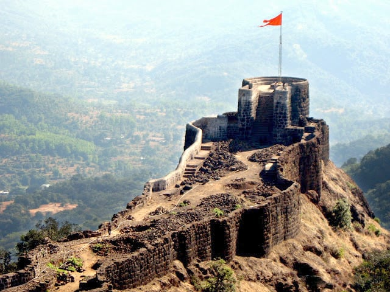
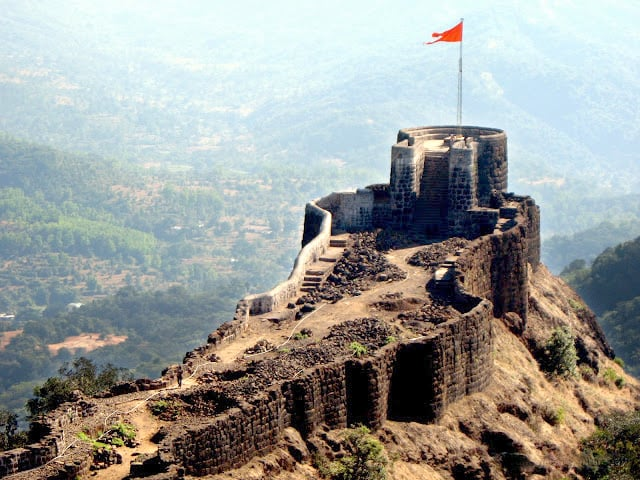
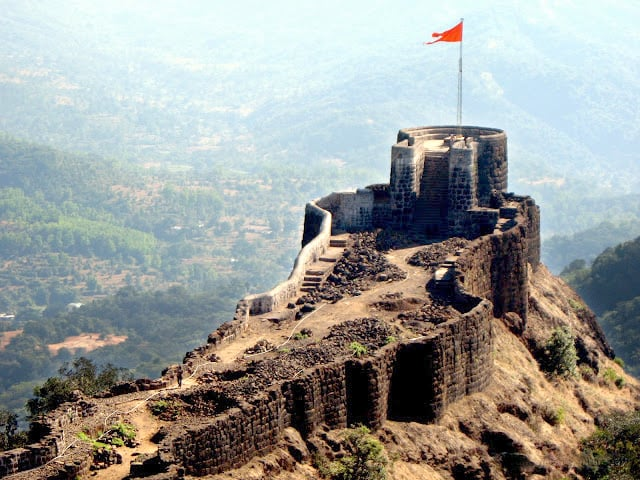

Embark on an interactive journey through the life and legacy of the Maratha warrior king.
Who Was Shivaji Maharaj?
Chhatrapati Shivaji Maharaj (1630-1680) was the founder of the Maratha Empire, known for his military brilliance, administrative genius, and unwavering spirit of Swarajya (self-rule).
📜 Timeline of His Life
⚔️ 1630: Born in Shivneri Fort
🰠1645: First conquest – Capture of Torna Fort
⚖️ 1674: Coronation as Chhatrapati at Raigad Fort
🔥 1680: Passed away, leaving behind an immortal legacy
📷 Explore the Legacy
🮠Test Your Knowledge!
What year was Shivaji Maharaj crowned as Chhatrapati?
⚔️ Famous Battles of Shivaji Maharaj
Battle of Pratapgad (1659): Defeated Afzal Khan and established Maratha strength.
Battle of Pavan Khind (1660): A heroic last stand led by Baji Prabhu Deshpande.
Battle of Surat (1664): A strategic raid that weakened Mughal finances.
Battle of Sinhagad (1670): A daring capture led by Tanaji Malusare.
🰠The Mighty Forts of Shivaji Maharaj
Shivaji Maharaj built and strengthened numerous forts that played crucial roles in his empire's defense.

📜 Shivaji Maharaj’s Administration
Shivaji Maharaj was a visionary ruler with a well-organized administration:
Asthapradhan Council: A group of eight ministers handling key governance aspects.
Revenue System: Focused on fair taxation and farmers' welfare.
Navy: Established a strong naval force to protect the coastline.
Military Strategy: Introduced guerrilla warfare tactics for swift victories.


 
